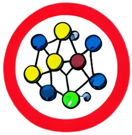

Roussel.
About
CV et al.
Publications
Projects
Blog
CV et al.
Last updated
October 20, 2025
Home
CV et al.
Curriculum Vitae
Download CV
Research Statement
Download Research Statement
Teaching Statement
Download Teaching Statement